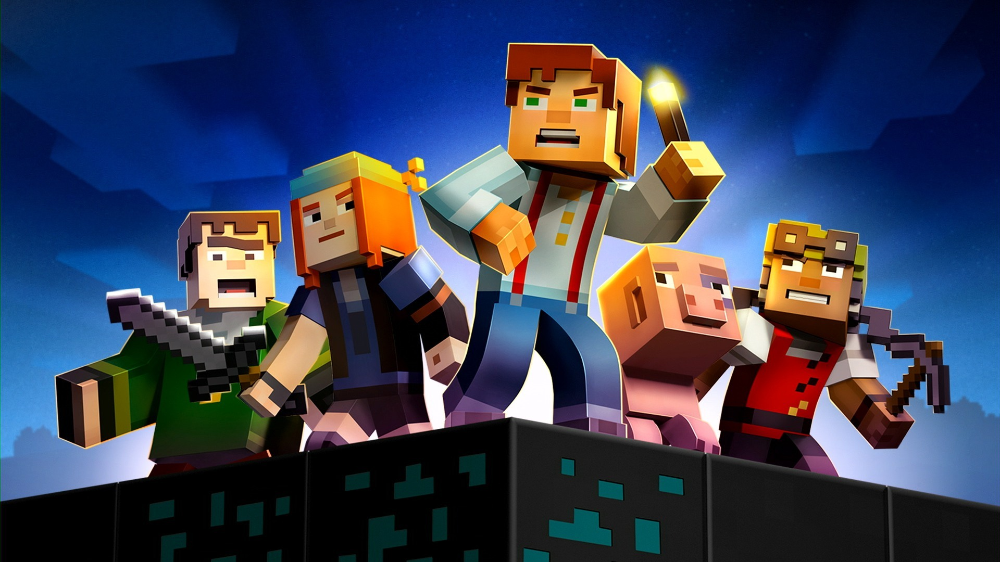

Question 4
What motivates you most as a leader?
Making a big impact when no one expects it
Healing and restoring balance among others
Creating opportunities with bold optimism
Empowering others with my unique, fun-loving nature
Back
Next